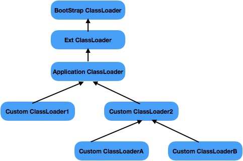

7 JVM类加载器
JVM类加载器
顾名思义，类的加载器就是负责类的加载职责，对于任意一个class，都需要由加载他的类加载器和这个类本身确立其在JVM中的唯一性。
在深入理解Java虚拟机中有介绍，类的加载分为好几个步骤，虚拟机把描述类的数据从Class文件加载到内存，并对数据进行校验、转换解析和初始化，最终形成可以被虚拟机直接运营的Java类，这个称为类的加载，具体可以查看JVM类加载机制这篇的总结，本篇要讲的类加载器则是类的加载过程中加载这个动作具体的手段。
JVM内置三大类加载器
JVM为我们提供了三大内置的类加载器，不同的类加载器负责将不同的类加载到JVM内存之中，并且它们严格遵守着父委托的机制。

BootStrap ClassLoader(根类加载器)
BootStrap ClassLoader是最为顶层的加载器，其没有任何父加载器，它是由C++编写的，主要负责虚拟机核心类库的加载，比如整个java.lang包都是由BootStrap ClassLoader来加载的，可以通过-Xbootclasspath来指定BootStrap ClassLoader的加载路径，也可以通过系统属性来得知当前JVM的BootStrap ClassLoader都加载了哪些资源，示例代码如下：
public class TestClassLoader {
public static void main(String[] args) {
System.out.println("BootStrap: " + String.class.getClassLoader());
System.out.println(System.getProperty("sun.boot.class.path"));
}
}
程序结果如下所示，其中String.class的类加载器是BootStrap ClassLoader，它是获取不到引用的，所以为null，而BootStrap ClassLoader所在的加载路径是可以通过sun.boot.class.path这个系统属性来获取到的。
注意：这里多个path是用:来隔开的，因为我是在Mac上跑的程序，如果Windows上应该是以;来分隔多个path
BootStrap: null
/Library/Java/JavaVirtualMachines/jdk1.8.0_171.jdk/Contents/Home/jre/lib/resources.jar:
/Library/Java/JavaVirtualMachines/jdk1.8.0_171.jdk/Contents/Home/jre/lib/rt.jar:
/Library/Java/JavaVirtualMachines/jdk1.8.0_171.jdk/Contents/Home/jre/lib/sunrsasign.jar:
/Library/Java/JavaVirtualMachines/jdk1.8.0_171.jdk/Contents/Home/jre/lib/jsse.jar:
/Library/Java/JavaVirtualMachines/jdk1.8.0_171.jdk/Contents/Home/jre/lib/jce.jar:
/Library/Java/JavaVirtualMachines/jdk1.8.0_171.jdk/Contents/Home/jre/lib/charsets.jar:
/Library/Java/JavaVirtualMachines/jdk1.8.0_171.jdk/Contents/Home/jre/lib/jfr.jar:
/Library/Java/JavaVirtualMachines/jdk1.8.0_171.jdk/Contents/Home/jre/classes
Ext ClassLoader(扩展类加载器)
Ext ClassLoader的父加载器是BootStrap ClassLoader，它主要用于加载JAVA_HOME下的jre\lb\ext的子目录里面的类库。Ext ClassLoader是由纯Java语言实现的，它是java.lang.URLClassLoader的子类，它的完整类名是sun.misc.Launcher$ExtCladdLoader。Ext ClassLoader所加载的类库可以通过系统属性java.ext.dirs获得，示例代码如下：
public class ExtCladdLoader {
public static void main(String[] args) {
System.out.println(System.getProperty("java.ext.dirs"));
}
}
输出结果如下所示：
/Users/gaohui/Library/Java/Extensions:
/Library/Java/JavaVirtualMachines/jdk1.8.0_171.jdk/Contents/Home/jre/lib/ext:
/Library/Java/Extensions:
/Network/Library/Java/Extensions:
/System/Library/Java/Extensions:/usr/lib/java
Application ClassLoader（应用类加载器）
应用类加载器是一种常见的类加载器，其负责加载classpath下的类库资源。 应用类加载器的父加载器是扩展类加载器，同时它也是自定义类加载器的默认父加载器，应用类加载器的加载路径一般通过-classpath或者-cp指定，同样也可以通过系统属性java.class.path进行获取，示例代码如下：
```java public class ApplicationClassLoader { public static void main(String[] args) { System.out.println(System.getProperty("java.class.path")); System.out.println(ApplicationClassLoader.class.getClassLoader()); }
} ```
输出结果如下：
/Users/gaohui/Documents/workspace1/Test/bin
sun.misc.Launcher$AppClassLoader@2a139a55
### 自定义ClassLoader
所有的自定义类加载器都是ClassLoader的直接子类或间接子类，java.lang.ClassLoader是一个抽象类，它里面并没有抽象方法，但是有findClass方法，务必实现该方法，否则将会抛出Class找不到的异常。
java
protected Class<?> findClass(String name) throws ClassNotFoundException {
throw new ClassNotFoundException(name);
}
```java package main;
import java.io.ByteArrayOutputStream; import java.io.IOException; import java.nio.file.Files; import java.nio.file.Path; import java.nio.file.Paths;
public class MyClassLoader extends ClassLoader {
private final static Path DEFAULT_CLASS_DIR = Paths.get("/Users/gaohui");
private final Path classDir;
public MyClassLoader() {
super();
this.classDir = DEFAULT_CLASS_DIR;
}
//允许传入指定路径的class 路径
public MyClassLoader(String classDir) {
super();
this.classDir = Paths.get(classDir);
}
public MyClassLoader(String classDir,ClassLoader parent) {
super(parent);
this.classDir = Paths.get(classDir);
}
@Override
protected Class<?> findClass(String name) throws ClassNotFoundException {
//读取class的二进制数据
byte[] classBytes = this.readClassBytes(name);
if(classBytes == null || classBytes.length ==0) {
throw new ClassNotFoundException("Can not load the class " + name);
}
//调用defineClass方法定义class
return this.defineClass(name, classBytes, 0,classBytes.length);
}
//将class文件读入内存
private byte[] readClassBytes(String name) throws ClassNotFoundException {
//将包名分隔符转换为文件路径分隔符
String classPath = name.replace(".", "/");
Path classFullPath = classDir.resolve(Paths.get(classPath + ".class"));
System.out.println(classFullPath.toFile().exists());
System.out.println(classFullPath.toAbsolutePath().toString());
if(!classFullPath.toFile().exists()) {
throw new ClassNotFoundException("The class " + name + " not found");
}
try {
ByteArrayOutputStream baos = new ByteArrayOutputStream();
Files.copy(classFullPath, baos);
return baos.toByteArray();
} catch (IOException e) {
throw new ClassNotFoundException("load the class " + name + " occur error");
}
}
}
``` 我们完成了一个非常简单的基于磁盘的ClassLoader的定义，，几个关键的地方都已经做了标注，第一个构造函数使用默认的文件路径，第二个构造函数允许外部指定一个特定的磁盘目录，第三个构造函数出来可以指定磁盘目录以外还可以指定该类加载器的父加载器。
在我们定义的类加载器中，通过将类的全名称转换成文件的全路径重写findClass方法，然后读取class文件的字节流数据，最后使用ClassLoader的defineClass方法对class完成了定义。
这里有有两个地方需要注意： 第一，关于类的全路径格式，一般情况下我们的类都是类似于java.lang.String这样的格式，但是有时不排除内部类，匿名内部类等；全路径格式有如下几种情况。 - java.lang.String: 包名.类名 - javax.swing.JSpinner$DefaultEditor:包名.类名$内部类 - javax.security.KeyStore$Builder$FileBuilder$1:包名.类名$内部类$内部类$匿名内部类
另外，需要注意的是，每个包名对应其实是一个目录，如果只是在java代码最上面加入package xxx;这样的包名是无效的，相当于没有定义包名。 第二，需要强调的是defineClass方法，该方法的完整方法描述是defineClass(String name, byte[] b, int off, int len)，其中，第一个是要定义类的名字，一般与findClass方法中的类名保持一致即可；第二个是class文件的二进制字节数组，这个也不难理解，但三个字节数组的偏移量；第四个是从偏移量开始读取多长的byte数据。在类的加载过程中，第一个阶段的加载主要是获取class的字节流信息，那么我们将整个字节流信息交给defineClass方法不久行了吗，为什么还要画蛇添足地指定偏移量和读取长度呢？原因是因为class字节数组不一定是从一个class文件中获得的，有可能是来自网络的，也有可能是编程的方法写入的，由此可见，一个字节数组可能会有多个class字节信息。
我们写一个简单的类，通过上面的自定义ClassLoader来加载它。
package com.gaohui;
public class HelloWorld {
static {
System.out.println("Hello Wolrd class is Initialized");
}
public String welcome() {
return "Hello Wolrd";
}
}
接下来我们对其进行简单的测试。
public class MyClassLoaderTest {
public static void main(String[] args) throws ClassNotFoundException, InstantiationException, IllegalAccessException {
MyClassLoader classLoader = new MyClassLoader();
Class<?> aClass = classLoader.loadClass("main.HelloWorld");
System.out.println(aClass.getClassLoader());
//这个时候会打印出static代码块的输出
Object helloWorld = aClass.newInstance();
System.out.println(helloWorld);
}
}
输出结果如下：
sun.misc.Launcher$AppClassLoader@2a139a55
Hello Wolrd class is Initialized
main.HelloWorld@4e25154f
我们会发现打印出的classLoader是AppClassLoader，我们自定义的ClassLoader并没有真正生效，那么怎么让我们的自定义ClassLoader生效呢？
我们可以尝试不使用IDE来开发这个HelloWorld类，我这里采用的是eclipse来写的，eclipse能自动注入CLASSPATH，eclipse又有自动保存，自动编译的功能。如果自动编译了，由于双亲委派，如果你的CustomLoader设置了父加载器是 Application ClassLoader 的话，就会自动优先使用Application ClassLoader加载器，而不是自定义的。
我尝试用文本编辑器重新写了个新的HelloWord类，“com.gaohui.HelloWorld”，然后调用javac命令对其进行编译，然后把我们的这个HelloWorld.class拷贝到/Users/gaohui目录下，并且加上两层目录，因为java中的包名对应就是操作系统中的目录。
package main;
public class MyClassLoaderTest {
public static void main(String[] args) throws ClassNotFoundException, InstantiationException, IllegalAccessException {
MyClassLoader classLoader = new MyClassLoader();
Class<?> aClass = classLoader.loadClass("com.gaohui.HelloWorld");
System.out.println(aClass.getClassLoader());
//这个时候会打印出static代码块的输出
Object helloWorld = aClass.newInstance();
System.out.println(helloWorld);
}
}
main.MyClassLoader@5c647e05
Hello Wolrd class is Initialized
com.gaohui.HelloWorld@55f96302
输出如果如上，我们发现这个新的HelloWorld类的确是能够被我们自定义的ClassLoader加载出来了。
这里输出结果表明“com.gaohui.HelloWorld”被成功加载了并且处处了类加载器信息，但是HelloWorld的静态代码块并没有得到执行，那是因为使用类加载器loadClass并不会导致类的主动初始化化，它只是指定了加载过程中的加载阶段而已。
这里不使用ide来编写这个类，需要注意的是类的包名，类的包名其实对应的是操作系统中的目录，指定com.gaohui表示这个类在com/gaohui的目录下，而不是简单指定包名即可，需要新建相应的目录，然后再编写这个类具体代码。
双亲委托机制的详细介绍
当一个类加载器被调用了loadClass之后，它并不会直接将其加载，而是先交给当前类加载器的父加载器尝试加载直到最顶层的父加载器，然后再依次向下进行加载，这也是为什么上面我们自定义加载器的时候没有在ide里面写这个HelloWorld类的原因。
那么我们能不能可以不这样做还能让我们的自定义ClassLoader加载这个类呢？
首先来看下ClassLoader的源码：
public Class<?> loadClass(String name) throws ClassNotFoundException {
return loadClass(name, false);
}
protected Class<?> loadClass(String name, boolean resolve)
throws ClassNotFoundException
{
synchronized (getClassLoadingLock(name)) {
// First, check if the class has already been loaded
Class<?> c = findLoadedClass(name);
if (c == null) {
long t0 = System.nanoTime();
try {
if (parent != null) {
c = parent.loadClass(name, false);
} else {
c = findBootstrapClassOrNull(name);
}
} catch (ClassNotFoundException e) {
// ClassNotFoundException thrown if class not found
// from the non-null parent class loader
}
if (c == null) {
// If still not found, then invoke findClass in order
// to find the class.
long t1 = System.nanoTime();
c = findClass(name);
// this is the defining class loader; record the stats
sun.misc.PerfCounter.getParentDelegationTime().addTime(t1 - t0);
sun.misc.PerfCounter.getFindClassTime().addElapsedTimeFrom(t1);
sun.misc.PerfCounter.getFindClasses().increment();
}
}
if (resolve) {
resolveClass(c);
}
return c;
}
}
上面的代码片段是java.lang.ClassLoader的loadClass方法，前面的loadClass最终调用的还是后面的那个两个参数的方法。 * 从当前类加载器的已加载类缓存中根据类的全路径来查询是否存在该类，吐过存在则直接返回。 * 如果当前类存在父类加载器，则调用父类加载器的loadClass方法对齐进行加载。 * 如果类加载器不存在父类加载器，则直接调用各类加载器对各类进行加载。 * 如果当前所有父类加载器都没有成功加载class，则尝试调用当前类加载器的findClass进行加载，该方法就是我们自定义加载器需要重写的方法。 * 由于loadClass指定了resolve为false，所以不会进行连接阶段的继续执行，这也就解释了为什么通过类加载器加载类并不会导致累得初始化。
那么回到开始时的问题，如何在使用ide环境，在不删除.class文件的情况下能够让我们的自定义ClassLoader来加载我们编写的类？
第一种方法是绕过系统加载器，直接将扩展类加载器作为MyClassLoader的父加载器，代码如下：
public class MyClassLoaderTest {
public static void main(String[] args) throws ClassNotFoundException, InstantiationException, IllegalAccessException {
ClassLoader extClassLoader = MyClassLoaderTest.class.getClassLoader().getParent();
MyClassLoader classLoader = new MyClassLoader("/Users/gaohui/Documents/workspace1/Test/bin/",extClassLoader);
Class<?> aClass = classLoader.loadClass("main.HelloWorld");
System.out.println(aClass.getClassLoader());
//这个时候会打印出static代码块的输出
Object helloWorld = aClass.newInstance();
System.out.println(helloWorld);
}
}
输出结果如下：
main.MyClassLoader@5c647e05
Hello Wolrd class is Initialized
main.HelloWorld@55f96302
首先我们通过MyClassLoaderTest.class获取系统类加载器，然后再获取系统类加载器的父类加载器中扩展类加载器，时期称为MyClassLoader的父类加载器，这样一来，根加载器和扩展类加载器都无法对"main.HelloWorld"类文件进行加载，自然而然地就交给了MyClassLoader对HelloWorld进行加载了，这种方式充分利用了类加载双亲委托机制的特性。
第二种方式是在构造MyClassLoader的时候指定其父类加载器为null，示例代码如下：
package main;
public class MyClassLoaderTest {
public static void main(String[] args) throws ClassNotFoundException, InstantiationException, IllegalAccessException {
//ClassLoader extClassLoader = MyClassLoaderTest.class.getClassLoader().getParent();
MyClassLoader classLoader = new MyClassLoader("/Users/gaohui/Documents/workspace1/Test/bin/",null);
Class<?> aClass = classLoader.loadClass("main.HelloWorld");
System.out.println(aClass.getClassLoader());
//这个时候会打印出static代码块的输出
Object helloWorld = aClass.newInstance();
System.out.println(helloWorld);
}
}
输出结果如下：
main.MyClassLoader@5c647e05
Hello Wolrd class is Initialized
main.HelloWorld@55f96302
根据loadClass方法的源码分析，当前类没有在父类加载器的情况下，会直接使用根加载器对该类进行加载，很显然，HelloWorld在根加载器的加载路径下是无法找到的，那么它自然而然地就交给当前类加载器进行加载了。